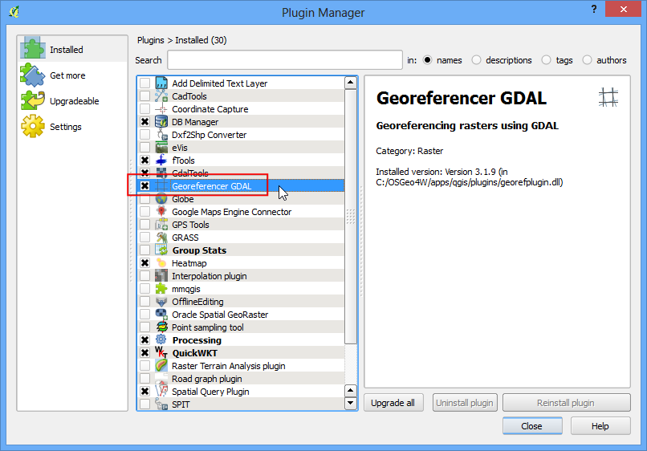
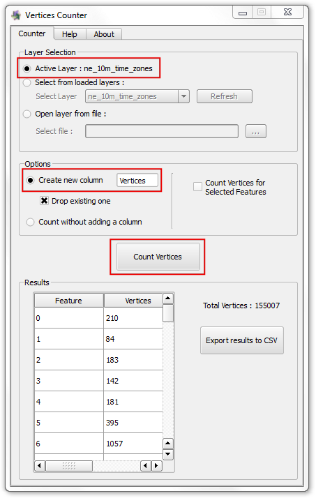

Importing Spreadsheets or CSV files¶
Many times the GIS data comes in a table or an Excel spreadsheet. Also, if you have a list lat/long coordinates, you can easily import this data in your GIS project.
Overview of the task¶
We will be importing a text file of earthquake data to QGIS.
Get the data¶
NOAA’s National Geophysical Data Center produces a great dataset of all significant earthquakes since 2150 BC. Learn more.
Download Significant Earthquake Database text file.
Procedure¶
- Examine your tabular data source. To import this data to QGIS, you will have to save it as a text file and need at least 2 columns which contain the X and Y coordinates. If you have a spreadsheet, use Save As function in your program to save it as a Tab Delimited File or a Comma Separated Values (CSV) file. Once you have the data exported this way, you can open it in a text editor such as Notepad to view the contents. In case of the Significant Earthquake Database, the data already comes as a text file which contains latitude and longitude of the earthquake centers along with other related attributes. You will see that each field is separated by a TAB.

- Open QGIS. Click on Layers ‣ Add Delimited Text Layer.

- In the Create a Layer from a Delimited Text File dialog, click on Browse and specify the path to the text file you downloaded. In the File format section, select Custom delimiters and check Tab. The Geometry definition secction will be auto-populated if it finds a suitable X and Y coordinate fields. In our case they are LONGITUDE and LATITUDE. You may change it if the import selects the wrong fields. Click OK.
Note
It is easy to confuse X and Y coordinates. Latitude specifies the north-south position of a point and hence it is a Y coordinate. Similarly Longitude specifies the east-west position of a point and it is a X coordinate.

- You may see some errors displayed in the next dialog. The erros in this file are mainly due to missing X or Y fields. You may examine these errors and fix the problems in your source file. For this tutorial, you may ignore these errors.

- Next, a Coordinate Reference System Selector will ask you to select a coordinate reference system. Since the earthquake coordinates are in latitudes and longitudes, you should select WGS 84. Click OK.

- You will now see that the data will be imported and displayed in the QGIS canvas.